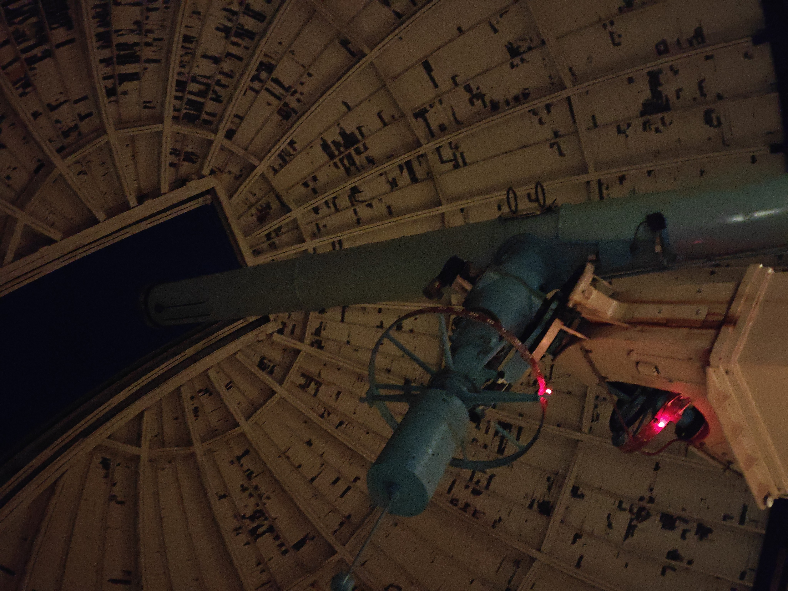
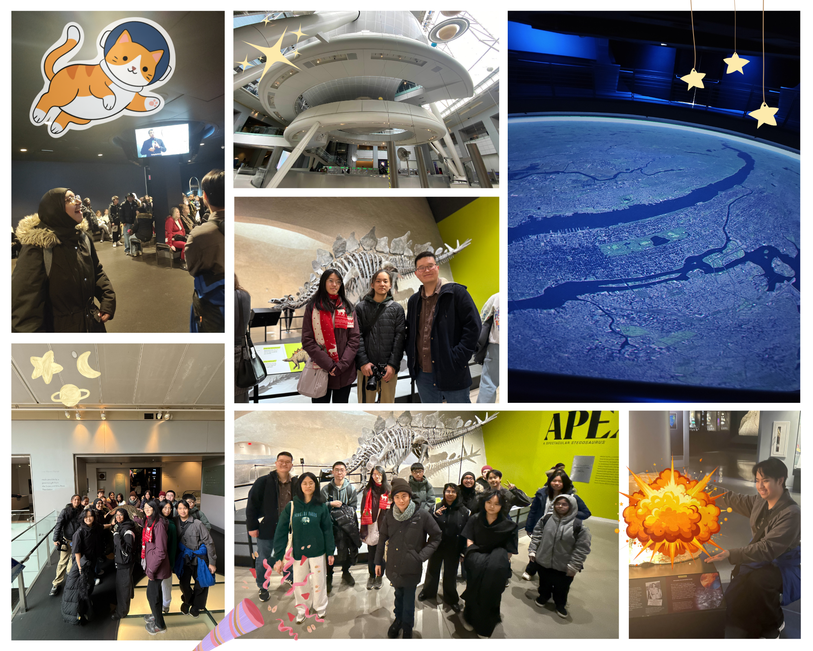
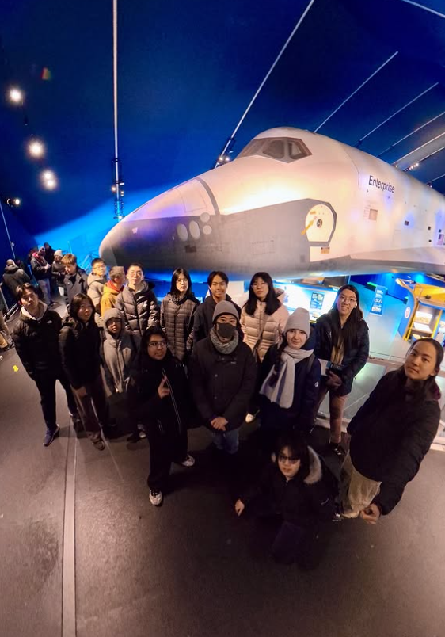
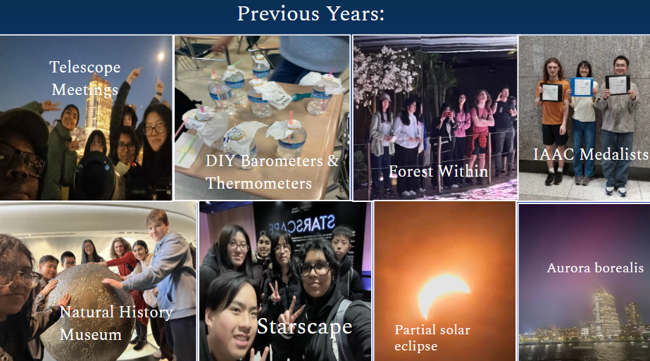
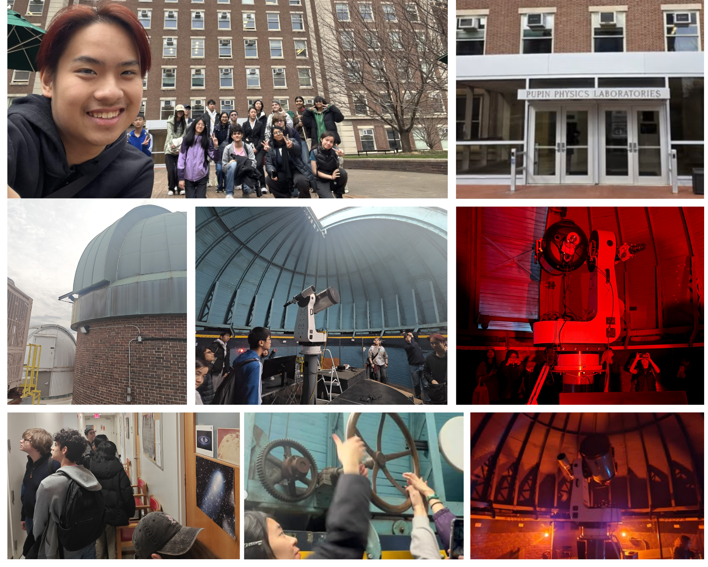
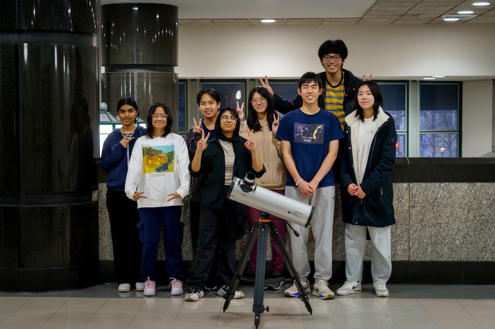

α • mag 1.4
40°29'N 80°01'W

I have always been fascinated with astronomy. When I was younger, I would read books about astrophysics. At Stuyvesant High School, I lead an astronomy club called StuySky. I would host telescope nights and coordinate field trips to museums, exhibits, and even an observatory!





